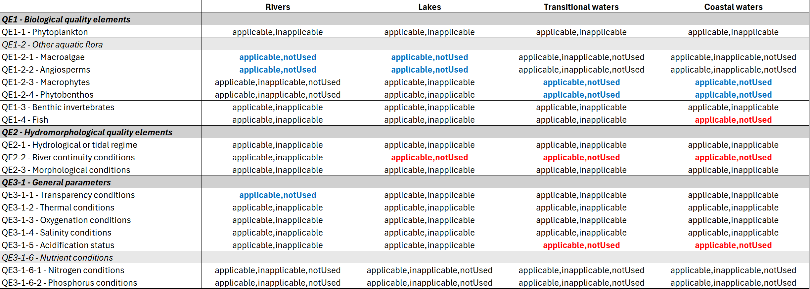
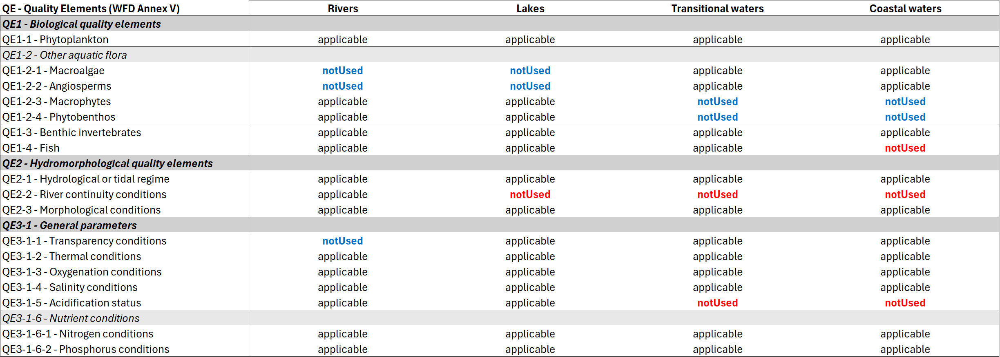
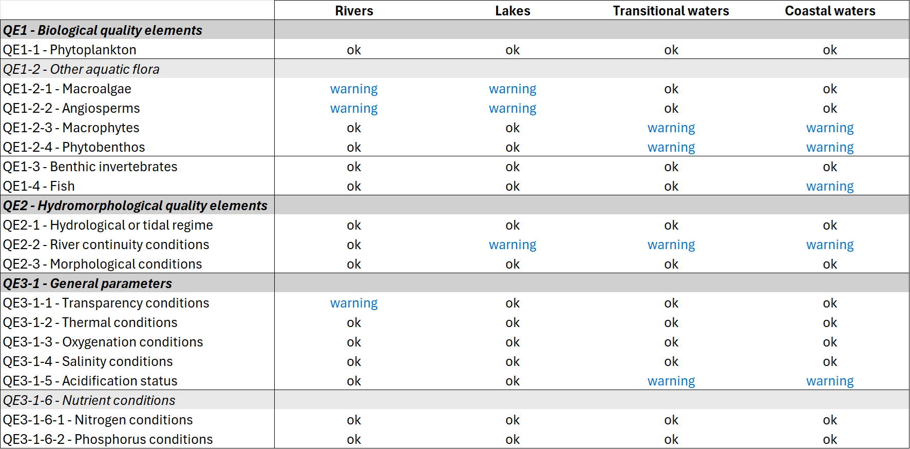
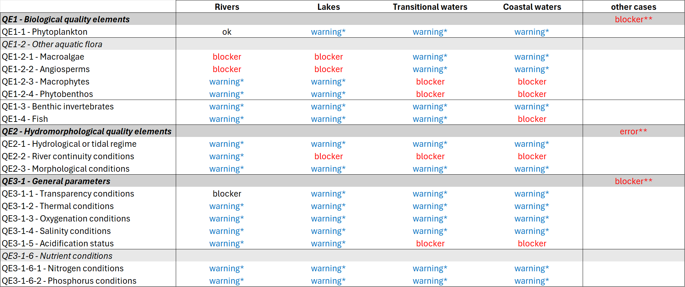
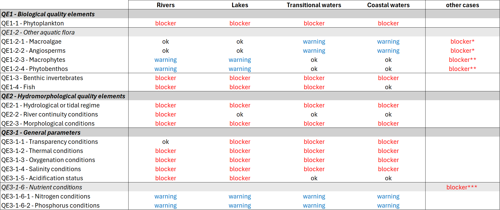

Surface water methodologies#
Warning
Updated: 2026-07-23
Added the quality control specification provided by ENV.
Removed the Documents section: the surface water methodologies are integrated into the surface water dataflow.
Updated: 2026-07-16
Corrected the multiplicity of naturalAWBHMWB in the SWType table.
Updated: 2026-07-08
Changes based on further input from DG ENV and WG DIS.
The SWTargetedQuestions table was modified.
The SWThresholdValue table was simplified and aligned with GWThresholdValue.
The QE3Classification table was modified to support the use of 5 classes.
The QE2Classification table was created to support the use of 5 classes.
The QE1Classification table was simplified.
The association table QEClassification_SWType was modified to allow the specification of the intercalibration type.
The BiologicalQualityElement enumeration was added to highlight the exclusion of QE1-2 and QE1-5.
SWType table now includes the specification of the applicable QE elements.
Purpose and overview#
This section:
revises the information related to Surface water methodologies in the 2nd and 3rd cycle of reporting of the Water Framework Directive River Basin Management Plans
presents a simplified proposal for the electronic reporting in the 4th cycle, as a separate dataset within the Surface water dataflow, to allow the cross-check between the methodologies data and the data reported at water body level
SWMET_2022 schema - 3rd cycle#
The SWMET_2022 schema defined the required data about surface water methodologies. For review purposes, the schema was divided in two groups:
a group of six classes requesting generic information at river basin district level (Figure 71)
a group of six classes requesting more technical information, about national types, thresholds, etc (Figure 72)
Generic information#
This section describes the revision of the following classes: SWExemptions, SWMethodologies, SWTargetedQ, SWChemicalStatusClassificationRBD, SWManagementObjectives and SWPressures.
%%{init: {'theme': 'default'}}%%
classDiagram
class SWMET {
+ countryCode
+ euRBDCode
+ dcMetadata
+ SWMethodologies
+ SWTargetedQ
+ SWChemicalStatusClassificationRBD
+ SWManagementObjectives
+ SWPressures
+ SWExemptions
}
class SWMethodologies {
+ typologyMethodologyReference[*]
+ smallWBsMethodologyReference[*]
+ minimumCatchmentAreaRivers
+ minimumSurfaceAreaLakes
+ otherMinimumCriteria
+ iRBDTypologyCoOrdinationReference[*]
+ hmwbMethodologyReference[*]
}
class SWTargetedQ {
+ oneOutAllOut
+ groupingExtrapolation
+ gepDefined
+ gepLevel
+ gepApproach
+ gepBiology
+ mitigationMeasures[*]
+ bqeForMEPGEP[*]
+ gesGepComparison
+ ecologicalStatusMethodReference[*]
+ gepMethodReference[*]
+ driversFailureEcologicalStatusPotentialReference[*]
}
class SWChemicalStatusClassificationRBD {
+ approachSWBNotMonitoredChemicalReference[*]
+ limitOfQuantification
+ backgroundConcentrations
+ backgroundConcentrationsReference[*]
+ bioavailability
+ bioavailabilityReference[*]
+ longTermTrendAnalysis
+ longTermTrendAnalysisReference[*]
+ mixingZoneMethodology
+ alternativeMixingZoneMethodologyReference[*]
+ mixingZoneMeasures
+ mixingZoneMeasuresReductionReference[*]
+ chemicalStatusReference[*]
}
class SWManagementObjectives {
+ managementObjectivesNutrients
+ managementObjectivesNutrientsQuantitativeN
+ managementObjectivesNutrientsQuantitativeP
+ managementObjectivesContinuity
+ managementObjectivesContinuityQuantitative
+ managementObjectivesReference[*]
+ waterResourcePlans
+ waterResourcePlansReference[*]
}
class SWPressures {
+ swPressuresNotAssessed[*]
+ swSignificantPressurePointSourceTools
+ swSignificantPressureDiffuseSourceTools
+ swSignificantPressureWaterAbstractionTools
+ swSignificantPressureWaterFlowTools
+ swSignificantPressureOtherSourceTools
+ swSignificanceDefinition
+ swSignificanceLinkFailure
+ swPressuresReference[*]
}
class SWExemptions {
+ swExemption44Impact[*]
+ swExemption44Driver[*]
+ swExemption45Impact[*]
+ swExemption45Driver[*]
+ swDisproportionateCost
+ swDisproportionateCostScale[*]
+ swDisproportionateCostAnalysis[*]
+ swDisproportionateCostAlternativeFinancing[*]
+ swDisproportionateCostOtherEULegislation
+ swTechnicalInfeasibility[*]
+ swNaturalConditions[*]
+ swExemption46[*]
+ swExemption47[*]
+ swExemptionsTransboundary
+ swExemptionsReference[*]
+ driversSWExemptionsReference[*]
}
SWMET "1" *-- "1" SWMethodologies
SWMET "1" *-- "1" SWTargetedQ
SWMET "1" *-- "1" SWChemicalStatusClassificationRBD
SWMET "1" *-- "1" SWManagementObjectives
SWMET "1" *-- "1" SWPressures
SWMET "1" *-- "1" SWExemptions
Figure 71 SWMET_2022 schema - generic data - 3rd cycle.#
The SWMET_2022 schema was already partially revised (see Current structure - 3rd cycle). Specifically, the SWExemptions data (Figure 91) will not be requested in the 4th cycle reporting.
The Commission has revised and simplified the SWMethodologies class, keeping only a subset of the elements requested in the 3rd cycle. The following elements were removed:
SWMET/SWMethodologies/typologyMethodologyReference
SWMET/SWMethodologies/smallWBsMethodologyReference
SWMET/SWMethodologies/otherMinimumCriteria
SWMET/SWMethodologies/iRBDTypologyCoOrdinationReference
Warning
The revised SWTargetedQ class was altered (2023-06-26).
The Commission has revised and simplified the SWTargetedQ class, keeping only a subset of the elements requested in the 3rd cycle. The following elements were removed:
SWMET/SWTargetedQ/oneOutAllOut
SWMET/SWTargetedQ/groupingExtrapolation
SWMET/SWTargetedQ/gepDefined
SWMET/SWTargetedQ/gepLevel
SWMET/SWTargetedQ/gepBiology
SWMET/SWTargetedQ/driversFailureEcologicalStatusPotentialReference
SWMET/SWTargetedQ/mitigationMeasures
The following elements will be requested at water category level (i.e. separately for rivers, lakes, transitional and coastal waters):
SWMET/SWTargetedQ/gepApproach
SWMET/SWTargetedQ/bqeForMEPGEP
The Commission has revised and simplified the SWChemicalStatusClassificationRBD class, keeping only a subset of the elements requested in the 3rd cycle. The following elements were removed:
SWMET/SWChemicalStatusClassificationRBD/approachSWBNotMonitoredChemicalReference
SWMET/SWChemicalStatusClassificationRBD/mixingZoneMeasuresReductionReference
SWMET/SWChemicalStatusClassificationRBD/chemicalStatusReference
The Commission has revised and simplified the SWManagementObjectives class, keeping only a subset of the elements requested in the 3rd cycle. The following elements were removed:
SWMET/SWManagementObjectives/managementObjectivesContinuityQuantitative
The Commission has revised SWPressures class. The following elements were removed:
SWMET/SWPressures/swPressuresReference
SWMET/SWPressures/swSignificantPressureOtherSourceTools
SWMET/SWPressures/swPressuresNotAssessed
The structure of the SWPressures class was also revised.
Technical information#
The full review of the classes and elements depicted in Figure 72 is pending.
The preliminary technical analysis suggests the changes described below.
In the SWRBSP class, the following elements were removed:
SWMET/SWRBSP/rbspOther
SWMET/SWRBSP/rbspScale
In the SWPrioritySubstance class, the following elements were removed (because they are not required or can be derived in the revised model):
SWMET/SWPrioritySubstance/psScale
SWMET/SWPrioritySubstance/psStatusAssessment
SWMET/SWPrioritySubstance/psStandardsUsed
The SWRBSP and SWPrioritySubstance tables have similar structure and content.
A single table, similar to the GWThresholdValue table can be used
for both types of substances.
In the SWPhysicoChemicalQE class, the following elements were removed:
SWMET/SWPhysicoChemicalQE/physChemParameterOther
A single threshold value, for the boundary between ‘good’ and ‘moderate’ status, was requested for physico-chemical elements. This approach was inadequate for several reasons:
the datatype used in the 3rd cycle did not allow the reporting of intervals, specially disjoint intervals (e.g. for parameters like pH)
the boundary between ‘good’ and ‘high’ (or ‘maximum’) potential was not recorded
Starting in 2028, monitoring results for physico-chemical parameters will be reported biennially to the EEA and the Commission. Knowledge of the classification boundaries will be necessary for the status classes applicable to physico-chemical elements, i.a. to allow a more adequate visualisation of progress over time. Therefore, the data structure should allow the reporting of the boundaries for different classes. The datatype used for the reporting of thresholds and intervals will also be corrected.
In the BQEMethod class, the following elements were removed:
SWMET/BQEMethod/bqePercentageOfTypes
SWMET/BQEMethod/bqeSensitivityImpactOther A unique identifier must be introduced, as well as an optional reference to supporting documentation. A clear separation between the original name (in the national language) and a technically meaningful translation to English should also be made.
%%{init: {'theme': 'default'}}%%
classDiagram
class SWMET {
+ countryCode
+ euRBDCode
+ dcMetadata
+ SWType[*]
+ BQEMethod[*]
+ SWSupportingQE[1..9]
+ SWPhysicoChemicalQE[*]
+ SWRBSP[*]
+ SWPrioritySubstance[*]
}
class SWType {
+ swTypeCode
+ swTypeDescription
+ swIntercalibrationType[*]
+ swTypeCategory
+ swTypeSpecificReferenceConditionsForBQEs
+ swTypeSpecificHyMoConditions
+ swTypeSpecificPhysChemConditions
}
class BQEMethod {
+ bqeMethodName
+ bqeCode
+ bqeCategoryRW
+ bqeCategoryLW
+ bqeCategoryTW
+ bqeCategoryCW
+ bqePercentageOfTypes
+ bqeSensitivityImpactNutrients
+ bqeSensitivityImpactOrganic
+ bqeSensitivityImpactChemical
+ bqeSensitivityImpactSaline
+ bqeSensitivityImpactAcidification
+ bqeSensitivityImpactTemperature
+ bqeSensitivityImpactHydrological
+ bqeSensitivityImpactMorphological
+ bqeSensitivityImpactOther[*]
}
class SWSupportingQE {
+ supportingQECode
+ supportingQESensitivityBQE
}
class SWPhysicoChemicalQE {
+ physChemParameter
+ physChemParameterOther
+ physChemCategoryRW
+ physChemCategoryLW
+ physChemCategoryTW
+ physChemCategoryCW
+ physChemTypeCode [1..*]
+ physChemValue
+ physChemUnit
+ physChemStandardType
+ physChemGMBoundary
}
class SWRBSP {
+ rbspCode
+ rbspOther
+ rbspMatrix
+ rbspCategoryRW
+ rbspCategoryLW
+ rbspCategoryTW
+ rbspCategoryCW
+ rbspStandardType
+ rbspValue
+ rbspUnit
+ rbspScale
+ rbspTechGuidance
+ rbspAnalyticalMethod
+ rbspAnalyticalMethodBAT
}
class SWPrioritySubstance {
+ psCode
+ psStatusAssessment
+ psMatrix
+ psStandardsUsed
+ psCategoryRW
+ psCategoryLW
+ psCategoryTW
+ psCategoryCW
+ psCategoryTeW
+ psStandardType
+ psValue
+ psUnit
+ psScale
+ psAnalyticalMethod
+ psAnalyticalMethodBAT
}
SWMET "1" *-- "*" SWType
SWMET "1" *-- "*" BQEMethod
SWMET "1" *-- "1..9" SWSupportingQE
SWMET "1" *-- "*" SWPhysicoChemicalQE
SWMET "1" *-- "*" SWRBSP
SWMET "1" *-- "*" SWPrioritySubstance
Figure 72 SWMET_2022 schema - technical data - 3rd cycle.#
Starting in 2028, monitoring results for biological elements will be reported every three years to the EEA and the Commission. In the 3rd cycle, information about class boundaries for biological elements was not reported. Given the variety and complexity of the biological quality elements, the range of of values must be normalised to allow some standardisation of the reporting.
In the EIONET WISE-2 Biology dataflow, a BiologyEQRClassificationProcedure table (Figure 73) tried to capture this information using the concept of Ecological Quality Ratio (EQR).
The current review of the WFD data model, and the recent changes to the WFD reporting requirements, provide an opportunity to align the WISE-2 and the WFD reporting, avoiding future duplications and inconsistencies in the reporting of the biological quality elements classification.
---
config:
class:
hideEmptyMembersBox: true
layout: dagre
theme: default
---
classDiagram
class BiologyEQRClassificationProcedure["WISE2::BiologyEQRClassificationProcedure"]{
+ countryCode: Country
+ parameterWaterBodyCategory: WaterBodyCategory
+ parameterNCSWaterBodyType: string
+ parameterNaturalAWBHMWB: NaturalAWBHMWB
+ observedPropertyDeterminandBiologyEQRCode: BiologicalQualityElement
+ procedureClassificationSystem: ClassificationSystem
+ parameterBoundaryValueClasses12: float
+ parameterBoundaryValueClasses23: float
+ parameterBoundaryValueClasses34: float
+ parameterBoundaryValueClasses45: float
+ resultObservationStatus: ObservationStatus
+ remarks: string [0..1]
}
Figure 73 WISE2 Biology - BiologyEQRClassificationProcedure table.#
Methodologies dataset - 4th cycle#
The revised structure for the surface water methodologies reporting is presented in this section.
The SWMethodologies, SWManagementObjectives and SWChemicalStatusClassification
tables have a structure similar to the corresponding classes
in the 3rd cycle reporting, minus the attributes removed by the Commission’s review.
See Figure 74.
---
config:
class:
hideEmptyMembersBox: true
layout: dagre
theme: neutral
---
classDiagram
direction TB
class SWMethodologies {
+ euRBDCode: wiseIdentifier
+ minimumCatchmentAreaRivers: nonNegativeValue
+ minimumSurfaceAreaLakes: nonNegativeValue
+ hmwbMethodologyReference: referenceCode [1..n]
}
class SWManagementObjectives {
+ euRBDCode: wiseIdentifier
+ managementObjectivesNutrients: YesNo
+ managementObjectivesNutrientsQuantitativeN: YesNo
+ managementObjectivesNutrientsQuantitativeP: YesNo
+ managementObjectivesContinuity: YesNo
+ managementObjectivesReference: referenceCode [1..n]
+ waterResourcePlans: YesNoRBMP
+ waterResourcePlansReference: referenceCode [1..n]
}
class SWChemicalStatusClassification {
+ euRBDCode: wiseIdentifier
+ limitOfQuantification: YesNo
+ backgroundConcentrations: YesNo
+ backgroundConcentrationsReference: referenceCode [0..n]
+ bioavailability: YesNo
+ bioavailabilityReference: referenceCode [0..n]
+ longTermTrendAnalysis: YesNo
+ longTermTrendAnalysisReference: referenceCode [0..n]
+ mixingZoneMethodology: YesNo
+ alternativeMixingZoneMethodologyReference: referenceCode [0..n]
+ mixingZoneMeasure: MixingZoneMeasure [0..n]
}
class MixingZoneMeasure{
<<enumeration>>
measureArticle113k
reviewOfPermitsIED
priorRegulationsArticle113g
other
notApplicable
}
class YesNoRBMP{
<<enumeration>>
yes
no
RBMP}
SWChemicalStatusClassification ..> MixingZoneMeasure: mixingZoneMeasure
SWManagementObjectives ..> YesNoRBMP: waterResourcePlans
classDef default fill:white,stroke:#000;
classDef forFixing fill:white,stroke:#f00;
Figure 74 Surface water methodologies - SWMethodologies, SWManagementObjectives, SWChemicalStatusClassification - 4th cycle.#
SWTargetedQuestions table#
In the table SWTargetedQuestions (Figure 75)
the questions regarding the approach used for the definition of good ecological potential (GEP)
differentiate between rivers, lakes, transitional and coastal waters.
If, for a given water category,
biological quality elements have been included in the definition of GEP,
then a list of the BQEs included must be provided.
For example, bqeForMEPGEPRW must be reported if, and only if,
gepApproachRW NOT IN ('mitigationMeasuresPragueApproachWithoutBQE','gepHasNotBeenDefined').
---
config:
class:
hideEmptyMembersBox: true
layout: dagre
theme: neutral
---
classDiagram
direction TB
class SWTargetedQuestions{
+ euRBDCode: wiseIdentifier
+ gepApproachRW: GEPApproach
+ bqeForMEPGEPRW: BiologicalQualityElement [0..n]
+ gepApproachLW: GEPApproach
+ bqeForMEPGEPLW: BiologicalQualityElement [0..n]
+ gepApproachTW: GEPApproach
+ bqeForMEPGEPTW: BiologicalQualityElement [0..n]
+ gepApproachCW: GEPApproach
+ bqeForMEPGEPCW: BiologicalQualityElement [0..n]
+ ecologicalStatusMethodReference: referenceCode [1..n]
+ gepMethodReference: referenceCode [1..n]
}
class GEPApproach {
<<enumeration>>
cisGuidanceReferenceApproach
mitigationMeasuresPragueApproachWithBQE
mitigationMeasuresPragueApproachWithoutBQE
hybridApproachReferencePrague
sameAssessmentAsNaturalWB
gepHasNotBeenDefined
}
SWTargetedQuestions ..> GEPApproach
classDef default fill:white,stroke:#000;
classDef forFixing fill:white,stroke:#f00;
Figure 75 Surface water methodologies - SWTargetedQuestions - 4th cycle.#
SWPressureAssessment table#
The table SWPressureAssessment (Figure 76)
uses a different approach:
the reporting of “pressures not assessed” is eliminated, because the data was difficult to analyse and contained inconsistencies
instead, for each pressure (or group of pressures), three attributes are requested (
swPressureAssessmentMethod,swSignificanceDefinition,swSignificanceLinkFailure)given that the pressure codelist is hierarchical, the granularity of the reporting is selected by Member States
the quality control procedure will verify that different levels are not selected simultaneously for any given RBD
For more information see PressureType codelist - 4th cycle.
---
config:
class:
hideEmptyMembersBox: true
layout: dagre
theme: neutral
---
classDiagram
direction TB
class SWPressureAssessment{
+ euRBDCode: wiseIdentifier
+ swPressure: PressureType
+ swPressureAssessmentMethod: PressureAssessmentMethod
+ swSignificanceDefinition: YesNoNotApplicable
+ swSignificanceLinkFailure: YesNoNotApplicable
}
class PressureAssessmentMethod{
<<enumeration>>
numericalTools
expertJudgement
combinationOfBoth
notAssessed
}
SWPressureAssessment ..> PressureAssessmentMethod
classDef default fill:white,stroke:#000;
classDef forFixing fill:white,stroke:#f00;
Figure 76 Surface water methodologies - SWPressureAssessment - 4th cycle.#
SWThresholdValue table#
The reporting of thresholds for priority substances and for RBSPs
is combined into a single SWThresholdValue table
(see Figure 77).
The GWThresholdValue table, in the groundwater methodologies dataset, has a similar structure
(see GWThresholdValue table).
The associations between the SWThresholdValue table and other tables are depicted in
Figure 78.
---
config:
class:
hideEmptyMembersBox: true
layout: dagre
theme: neutral
---
classDiagram
direction TB
class SWThresholdValue{
+ swThresholdIdentifier: wiseIdentifier
+ parameterCode: Parameter
+ eqsStandardType: StandardType
+ chemicalMatrix: ChemicalMatrixType
+ thresholdValueRange: range
+ thresholdValueUnit: UnitOfMeasure
«compliance-with-criteria»
+ analyticalMethod: YesNo
+ analyticalMethodBAT: YesNoNotApplicable
«reference»
+ swThresholdReference: referenceCode [0..n]
}
class SWPollutant ["SurfaceWaterDataset::SWPollutant"]:::otherDataset{
+ euSurfaceWaterBodyCode
+ swPollutantCode
+ swThresholdIdentifier [1..n]
+ swThresholdExceedance [0..n]
}
SWThresholdValue <.. SWPollutant: swThresholdIdentifier
SWThresholdValue <.. SWPollutant: swThresholdExceedance
classDef default fill:white,stroke:#000;
classDef forFixing fill:white,stroke:#f00;
classDef otherDataset fill:lavender,stroke:#000;
Figure 77 Surface water methodologies - SWThresholdValue - 4th cycle.#
---
config:
class:
hideEmptyMembersBox: true
layout: dagre
theme: neutral
---
classDiagram
direction TB
class SWType {
+ swTypeIdentifier: wiseIdentifier
}
class SWPollutant ["SurfaceWaterDataset::SWPollutant"]:::otherDataset{
+ euSurfaceWaterBodyCode
+ swPollutantCode
+ swThresholdIdentifier [1..n]
+ swThresholdExceedance [0..n]
}
class SWThresholdValue{
+ swThresholdIdentifier: wiseIdentifier
+ parameterCode: Parameter
}
class SWThreshold_SWType{
+ swThresholdIdentifier: wiseIdentifier
+ swTypeIdentifier: wiseIdentifier
}
class SWNaturalBackgroundLevel{
+ swTypeIdentifier: wiseIdentifier
+ parameterCode: Parameter
+ parameterValue: range
+ parameterUnit: UnitOfMeasure
}
SWPollutant ..> SWThresholdValue: swThresholdIdentifier
SWPollutant ..> SWThresholdValue: swThresholdExceedance
SWThresholdValue "1" -- "0..n" SWThreshold_SWType
SWThreshold_SWType "0..n" -- "1" SWType
SWType "1" -- "1..n" SWNaturalBackgroundLevel
classDef default fill:white,stroke:#000;
classDef forFixing fill:white,stroke:#f00;
classDef otherDataset fill:lavender,stroke:#000;
Figure 78 Surface water methodologies - SWThresholdValue associations with other tables - 4th cycle.#
QE3Classification table#
The reporting of thresholds and class boundaries for physico-chemical quality elements
requires a new QE3Classification table
(see Figure 79).
Formally, the classes ‘poor’ and ‘bad’ status are not defined for physico-chemical quality elements.
The optional attributes classPoor and classBad allow the reporting of the classification ranges
for those classes.
The associations between the QE3Classification table and other tables are depicted in
Figure 80.
---
config:
class:
hideEmptyMembersBox: true
layout: dagre
theme: neutral
---
classDiagram
direction LR
class QE3Classification{
+ qeClassificationIdentifier: wiseIdentifier
+ qeCode: PhysicoChemicalQualityElement
+ parameterCode: Parameter
+ parameterUnit: UnitOfMeasure
+ standardType: StandardType
+ classHighOrMax: range
+ classGood: range
+ classModerate: range
+ classPoor: range [0..1]
+ classBad: range [0..1]
«reference»
+ qeClassificationReference: referenceCode [0..n]
}
classDef default fill:white,stroke:#000;
classDef forFixing fill:white,stroke:#f00;
classDef partial fill:lightyellow,stroke:#000;
Figure 79 Surface water methodologies - QE3Classification - 4th cycle.#
---
config:
class:
hideEmptyMembersBox: true
layout: dagre
theme: neutral
---
classDiagram
direction TB
class SWType:::partial{
+ swTypeIdentifier: wiseIdentifier
}
class SWQualityElement["SurfaceWaterDataset::SWQualityElement"]:::otherDataset{
+ euSurfaceWaterBodyCode: wiseIdentifier
+ qeCode: QualityElement
+ qeClassificationIdentifier: wiseIdentifier
}
class QE3Classification{
+ qeClassificationIdentifier: wiseIdentifier
+ qeCode: PhysicoChemicalQualityElement
+ parameterCode: Parameter
+ parameterUnit: UnitOfMeasure
}
class QEClassification_SWType{
+ qeClassificationIdentifier: wiseIdentifier
+ swTypeIdentifier: wiseIdentifier
+ swIntercalibrationType: IntercalibrationType [1..n]
}
class SWNaturalBackgroundLevel{
+ swTypeIdentifier: wiseIdentifier
+ parameterCode: Parameter
+ parameterValue: range
+ parameterUnit: UnitOfMeasure
}
SWQualityElement ..> QE3Classification
QE3Classification "1" -- "0..n" QEClassification_SWType
QEClassification_SWType "0..n" -- "1" SWType
SWType "1" -- "0..n" SWNaturalBackgroundLevel
classDef default fill:white,stroke:#000;
classDef forFixing fill:white,stroke:#f00;
classDef otherDataset fill:lavender,stroke:#000;
Figure 80 Surface water methodologies - QE3Classification associations with other tables - 4th cycle.#
QE2Classification table#
The reporting of thresholds and class boundaries for physico-chemical quality elements
requires a new QE2Classification table
(see Figure 81).
Formally, the classes ‘poor’ and ‘bad’ status are not defined for hydromorphological quality elements.
The attributes classPoor and classBad be used to allow the use of those classes.
if
classPoor = 'yes', then the valueqeStatusOrPotentialValue = '4'can be reported, for that qeClassificationIdentifier and qeCode, in theSWQualityElementtableif
classBad = 'yes', then the valueqeStatusOrPotentialValue = '5'can be reported, for that qeClassificationIdentifier and qeCode, in theSWQualityElementtable.if the only the standard 3 classes are being used, specify
classPoor = 'no'andclassBad = 'no'.the combination
classPoor = 'no' AND classBad = 'yes'is not valid
The associations between the QE2Classification table and other tables are depicted in
Figure 82.
---
config:
class:
hideEmptyMembersBox: true
layout: dagre
theme: neutral
---
classDiagram
direction LR
class QE2Classification{
+ qeClassificationIdentifier: wiseIdentifier
+ qeCode: HydromorphologicalQualityElement
+ classPoor: YesNo
+ classBad: YesNo
«reference»
+ qeClassificationReference: referenceCode [0..n]
}
classDef default fill:white,stroke:#000;
classDef forFixing fill:white,stroke:#f00;
classDef partial fill:lightyellow,stroke:#000;
Figure 81 Surface water methodologies - QE2Classification - 4th cycle.#
---
config:
class:
hideEmptyMembersBox: true
layout: dagre
theme: neutral
---
classDiagram
direction TB
class SWType:::partial{
+ swTypeIdentifier: wiseIdentifier
}
class SWQualityElement["SurfaceWaterDataset::SWQualityElement"]:::otherDataset{
+ euSurfaceWaterBodyCode: wiseIdentifier
+ qeCode: QualityElement
+ qeClassificationIdentifier: wiseIdentifier
}
class QE2Classification{
+ qeClassificationIdentifier: wiseIdentifier
+ qeCode: HydroMorphologicalQualityElement
}
class QEClassification_SWType{
+ qeClassificationIdentifier: wiseIdentifier
+ swTypeIdentifier: wiseIdentifier
+ swIntercalibrationType: IntercalibrationType [1..n]
}
SWQualityElement ..> QE2Classification
QE2Classification "1" -- "0..n" QEClassification_SWType
QEClassification_SWType "0..n" -- "1" SWType
classDef default fill:white,stroke:#000;
classDef forFixing fill:white,stroke:#f00;
classDef otherDataset fill:lavender,stroke:#000;
Figure 82 Surface water methodologies - QE2Classification associations with other tables - 4th cycle.#
QE1Classification and BQEMethod table#
The reporting of class boundaries for biological quality elements
requires a new QE1Classification table
(see Figure 83).
The table “replaces” the WISE2 Biology - BiologyEQRClassificationProcedure table.
All boundaries are reported using EQRs.
The associations between the QE1Classification table and other tables are depicted in
Figure 84.
---
config:
class:
hideEmptyMembersBox: true
layout: dagre
theme: neutral
---
classDiagram
direction LR
class BQEMethod{
+ bqeMethodIdentifier: wiseIdentifier
+ bqeCode: BiologicalQualityElement
+ bqeMethodName: string
+ bqeMethodNameLanguage: Language
+ bqeMethodReference: referenceCode [0..n]
«sensitivity»
+ bqeSensitivityImpactNutrients: YesNo
+ bqeSensitivityImpactOrganic: YesNo
+ bqeSensitivityImpactChemical: YesNo
+ bqeSensitivityImpactSaline: YesNo
+ bqeSensitivityImpactAcidification: YesNo
+ bqeSensitivityImpactTemperature: YesNo
+ bqeSensitivityImpactHydrological: YesNo
+ bqeSensitivityImpactMorphological: YesNo
}
class QE1Classification{
+ qeClassificationIdentifier: wiseIdentifier
+ qeCode: BiologicalQualityElement
+ parameterUnit: UnitOfMeasure
+ classHighOrMax: range
+ classGood: range
+ classModerate: range
+ classPoor: range
+ classBad: range
«scope-and-references»
+ bqeMethodIdentifier: wiseIdentifier
+ qeClassificationReference: referenceCode [0..n]
}
class BiologicalQualityElement{
<<enumeration>>
QE1-1 - Phytoplankton
QE1-2-1 - Macroalgae
QE1-2-2 - Angiosperms
QE1-2-3 - Macrophytes
QE1-2-4 - Phytobenthos
QE1-3 - Benthic invertebrates
QE1-4 - Fish
}
BQEMethod <.. QE1Classification
BQEMethod ..> BiologicalQualityElement
QE1Classification ..> BiologicalQualityElement
note for BiologicalQualityElement "the label is not part of the code"
classDef default fill:white,stroke:#000;
classDef forFixing fill:white,stroke:#f00;
classDef otherDataset fill:lavender,stroke:#000;
Figure 83 Surface water methodologies - BQEMethod and QE1Classification - 4th cycle.#
---
config:
class:
hideEmptyMembersBox: true
layout: dagre
theme: neutral
---
classDiagram
direction TB
class SWType {
+ swTypeIdentifier: wiseIdentifier
}
class SWQualityElement["SurfaceWaterDataset::SWQualityElement"]:::otherDataset{
+ euSurfaceWaterBodyCode: wiseIdentifier
+ qeCode: QualityElement
+ qeClassificationIdentifier: wiseIdentifier
}
class BQEMethod{
+ bqeMethodIdentifier: wiseIdentifier
+ bqeCode: BiologicalQualityElement
}
class QE1Classification{
+ qeClassificationIdentifier: wiseIdentifier
+ qeCode: BiologicalQualityElement
+ bqeMethodIdentifier: wiseIdentifier
}
class QEClassification_SWType{
+ qeClassificationIdentifier: wiseIdentifier
+ swTypeIdentifier: wiseIdentifier
+ swIntercalibrationType: IntercalibrationType [1..n]
}
SWQualityElement ..> QE1Classification: qeClassificationIdentifier
BQEMethod "1" -- "1..n" QE1Classification
QE1Classification "1" -- "0..n" QEClassification_SWType
QEClassification_SWType "0..n" -- "1" SWType
classDef default fill:white,stroke:#000;
classDef forFixing fill:white,stroke:#f00;
classDef otherDataset fill:lavender,stroke:#000;
Figure 84 Surface water methodologies - BQEMethod and QE1Classification associations - 4th cycle.#
SWType table#
The SWType table contains information about
the national surface water types
defined in accordance to Annex II of the WFD.
This table is central to the surface water methodologies
(see Figure 85).
For each national surface water type, the quality elements
which used in the ecological status assessment
are declared in the SWType table.
Only the applicable quality elements
are reported in the SWQualityElement table.
The purpose is to minimise reporting burden
and to avoid the ambiguities observed in the 3rd cycle reporting
(see Data analysis - 3rd cycle).
---
config:
class:
hideEmptyMembersBox: true
layout: dagre
theme: neutral
---
classDiagram
direction TB
class SWType{
+ swTypeIdentifier: wiseIdentifier
+ surfaceWaterBodyCategory: WaterBodyCategory
+ naturalAWBHMWB: NaturalAWBHMWB [1..n]
+ swIntercalibrationType: IntercalibrationType [1..n]
+ swTypeCode: string100
+ swTypeDescription: string
+ swTypeDescriptionLanguage: Language
+ swTypeReference: referenceCode [0..n]
«quality-elements»
+ QE1_1: ApplicableInapplicableNotUsed
+ QE1_2_1: ApplicableInapplicableNotUsed
+ QE1_2_2: ApplicableInapplicableNotUsed
+ QE1_2_3: ApplicableInapplicableNotUsed
+ QE1_2_4: ApplicableInapplicableNotUsed
+ QE1_3: ApplicableInapplicableNotUsed
+ QE1_4: ApplicableInapplicableNotUsed
+ QE2_1: ApplicableInapplicableNotUsed
+ QE2_2: ApplicableInapplicableNotUsed
+ QE2_3: ApplicableInapplicableNotUsed
+ QE3_1_1: ApplicableInapplicableNotUsed
+ QE3_1_2: ApplicableInapplicableNotUsed
+ QE3_1_3: ApplicableInapplicableNotUsed
+ QE3_1_4: ApplicableInapplicableNotUsed
+ QE3_1_5: ApplicableInapplicableNotUsed
+ QE3_1_6_1: ApplicableInapplicableNotUsed
+ QE3_1_6_2: ApplicableInapplicableNotUsed
}
class SWQualityElement["SurfaceWaterDataset::SWQualityElement"]:::partial{
}
class SWPollutant["SurfaceWaterDataset::SWPollutant"]:::partial{
}
SWQualityElement ..> QE1Classification: qeClassificationIdentifier
SWQualityElement ..> QE3Classification: qeClassificationIdentifier
QE1Classification -- "0..n" QEClassification_SWType
QE3Classification -- "0..n" QEClassification_SWType
QEClassification_SWType "0..n" -- SWType
SWPollutant ..> SWThresholdValue: swThresholdIdentifier
SWThresholdValue -- "0..n" SWThreshold_SWType
SWThreshold_SWType "0..n" -- SWType
SWType "1" -- "1..n" SWNaturalBackgroundLevel
classDef default fill:white,stroke:#000;
classDef forFixing fill:white,stroke:#f00;
classDef partial fill:lavender,stroke:#000;
Figure 85 Surface water methodologies - SWType - 4th cycle.#
Figure 86 illustrates the valid options for each quality element, depending on the water category.
{kind=link}

Figure 86 SWType quality elements - valid options – 4th cycle.#
Depending on the water body category,
some quality elements may be reported as notUsed:
For rivers:
QE1-2-1 - Macroalgae
QE1-2-2 - Angiosperms
QE3-1-1 - Transparency conditions
For lakes:
QE1-2-1 - Macroalgae
QE1-2-2 - Angiosperms
QE2-2 - River continuity conditions
For transitional waters:
QE1-2-3 - Macrophytes
QE1-2-4 - Phytobenthos
QE2-2 - River continuity conditions
QE3-1-5 - Acidification status
For coastal waters:
QE1-4 - Fish
QE1-2-3 - Macrophytes
QE1-2-4 - Phytobenthos
QE2-2 - River continuity conditions
QE3-1-5 - Acidification status
In exceptional cases, some biological quality elements may be reported as ‘inapplicable’ (see e.g. Part 3 of Annex 1 [1]).
Figure 87 illustrates the default option for each quality element, depending on the water category.
{kind=link}

Figure 87 SWType quality elements - default option – 4th cycle.#
Select
'applicable'if the quality element is applicable and should therefore be used in the assessment provided that it is relevant to monitor (all quality elements are relevant to monitor in the surveillance monitoring network and only the most sensitive to the pressures are to monitor in the operational monitoring network).
Figure 88 illustrates the quality control: only warnings are issued.
Figure 88 SWType quality elements - quality controls if ‘applicable’ is selected – 4th cycle.#
Select
'inapplicable', if the quality element status is never assessed for the water bodies belonging to a given national surface water body type (see e.g. Part 3 of Annex 1 [1]). This should normally be justified in the framework of the intercalibration decision. Otherwise, this will trigger a warning (Figure 89).It is not possible to mark all biological quality elements as ‘inapplicable’: a quality control blocker will be raised.
It is not possible to mark all physico-chemical quality elements as ‘inapplicable’: a quality control blocker will be raised.
If all hydromorphological quality elements are reported as ‘inapplicable’: a quality control error will be raised.

Figure 89 SWType quality elements - quality controls if ‘inapplicable’ is selected – 4th cycle.#
Select
'notUsed', for the cases where the WFD does not foresee the use of a given quality element for a given water category (e.g. acidification in coastal waters) and therefore the quality element was not used in the assessment.In transitional and coastal waters, it is not possible to mark both macroalgae and angiosperms as ‘notUsed’: a quality control blocker will be raised (Figure 90).
In rivers and lakes, it is not possible to mark both macrophytes and phytobenthos as ‘notUsed’: a quality control blocker will be raised.
It is not possible to mark both nitrogen and phosphorus conditions as ‘notUsed’: a quality control blocker will be raised.

Figure 90 SWType quality elements - quality controls if ‘notUsed’ is selected – 4th cycle.#
{kind=link}
{kind=link}
{kind=link}
The data reported in the SWType table controls the data that must be reported
in the SWQualityElement table, for the water bodies of that national type.
For example:
If
surfaceWaterBodyCategory = 'CW', it is expected thatQE2_2 = 'notUsed'. Therefore, in theSWQualityElementtable, the valueqeCode = 'QE2-2'will never occur for coastal water bodies.If
surfaceWaterBodyCategory = 'CW', it is expected thatQE1_4 = 'notUsed'. Therefore, in theSWQualityElementtable, the valueqeCode = 'QE1-4'will never occur for coastal water bodies.
Another example:
If
[surfaceWaterBodyCategory] = 'RW', it is possible to set[QE1_1] = 'notUsed'. In that case, in theSWQualityElementtable, the value[qeCode] = 'QE1-1'will never occur for rivers belonging to that national type.If
[surfaceWaterBodyCategory] = 'RW', it is possible to set[QE1_1] = 'applicable'. In that case, in theSWQualityElementtable, the value[qeCode] = 'QE1-1'must be reported for rivers belonging to that national type.
Note
The attribute names use the underscore character (_)
instead of the hyphen character (-) for technical reasons.
Codelists - 4th cycle#
For the
GEPApproachcodelist, see Table 56.For the
MixingZoneMeasurecodelist, see Table 57.For the
PressureAssessmentMethodcodelist, see Table 58.
GEPApproach codelist
Notation |
Label |
Definition |
|---|---|---|
cisGuidanceReferenceApproach |
CIS Guidance 37 reference approach |
Reference approach as explained in CIS Guidance 37 [2] |
mitigationMeasuresPragueApproachWithBQE |
Mitigation measures (Prague) approach with BQE |
Mitigation measures (Prague) approach as explained in CIS Guidance 37, including an assessment of biological quality elements that would be applicable to natural water bodies. |
mitigationMeasuresPragueApproachWithoutBQE |
Mitigation measures (Prague) approach without BQE |
Mitigation measures (Prague) approach, but not yet including any biological quality elements in the assessment. |
hybridApproachReferencePrague |
Hybrid CIS Guidance Reference approach / Prague approach |
Hybrid between the CIS Guidance 37 reference approach and the mitigation measures (Prague) approach. |
sameAssessmentAsNaturalWB |
Same assessment system as for natural water bodies |
The exact same assessment system as for natural water bodies is used. |
gepHasNotBeenDefined |
GEP has not been defined |
Good ecological potential has not been not defined for this water category. |
MixingZoneMeasure codelist
Notation |
Label |
Definition |
|---|---|---|
measureArticle113k |
Measures according to Article 11(3)(k) of the WFD |
|
reviewOfPermits |
Review of permits referred to in the IPPC Directive |
|
priorRegulationsArticle113g |
Prior regulations referred to in Article 11(3)(g) of the WFD |
|
other |
Other |
|
notApplicable |
Not applicable |
Use this option if mixing zones were not defined. |
PressureAssessmentMethod codelist
Notation |
Label |
Definition |
|---|---|---|
numericalTools |
Numerical Tools |
|
expertJudgement |
Expert Judgement |
|
combinationOfBoth |
Combination of Both |
|
notAssessed |
Not Assessed |